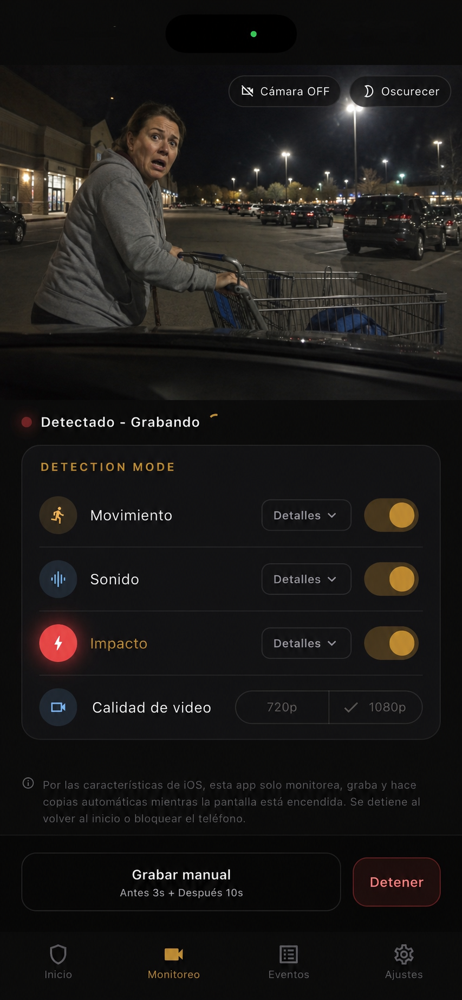

Sin instalación
Empieza con un móvil de repuesto, una montura sencilla y sin modificar el coche.
App de modo aparcamiento
El modo aparcamiento vigila el coche cuando está estacionado. Parking Guard lleva esa idea a un móvil de repuesto, con vídeos locales, fotogramas del evento y copia opcional en Google Drive.

Empieza con un móvil de repuesto, una montura sencilla y sin modificar el coche.
Movimiento, sonido e impacto ayudan a detectar incidentes mientras el coche está aparcado.
Los vídeos y fotogramas se guardan primero en el dispositivo.
En una dash cam, el modo aparcamiento significa que la cámara sigue vigilando el coche estacionado. Parking Guard no es hardware fijo: es una app que usa un smartphone para cubrir esa necesidad de pruebas.
El objetivo es guardar el momento útil: un golpe en aparcamiento, un portazo, un carrito, vandalismo o una persona acercándose al coche.
Una dash cam con modo parking puede ser mejor para cobertura permanente, pero suele requerir compra, cableado, gestión de batería e instalación. Parking Guard reduce esa fricción usando un móvil que ya tienes.
Coloca el móvil dentro del coche, apunta hacia la zona de riesgo y activa la vigilancia antes de irte.
En iPhone, la vigilancia funciona solo mientras la app permanece abierta y la pantalla encendida. Volver a la pantalla de inicio o bloquear el teléfono detiene la vigilancia.
En Android, Parking Guard puede continuar mediante un servicio en primer plano, según permisos y comportamiento del dispositivo.
Empieza con 1080p, limpia el cristal, prueba el encuadre y usa alimentación externa si la sesión será larga. En iPhone compatibles, 4K puede ayudar con distancia, pero consume más memoria.
La app guarda 3 segundos antes de la detección y 10, 30 o 60 segundos después. Si se detecta otro evento durante la grabación, puede extenderse en un único clip hasta 60 segundos.
FAQ
Respuestas breves para comparar el modo parking de una dash cam con la vigilancia desde un móvil de repuesto.
Sí. Es una app de vigilancia para coche aparcado centrada en guardar pruebas con un móvil de repuesto.
No por completo. Una dash cam fija puede ser mejor para cobertura permanente. Parking Guard es una alternativa flexible y sin cableado.
Sí. Las pruebas se guardan primero en el dispositivo. Internet solo hace falta para la copia opcional en Google Drive o los avisos por Gmail.